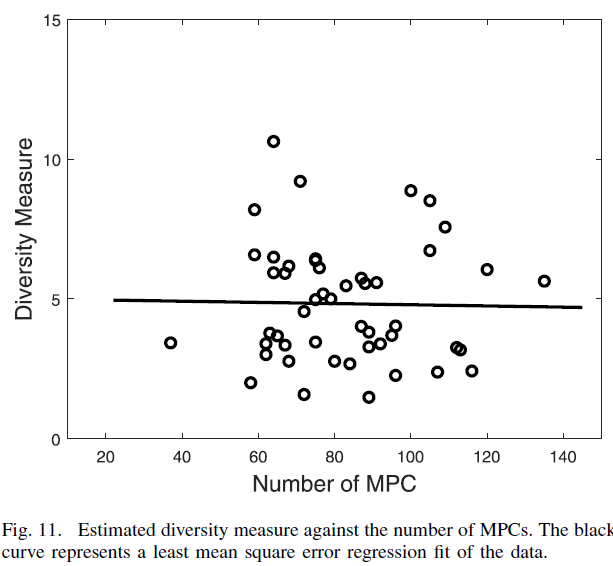

今后打算用这篇博文实时记录一下研究生阶段精读过的论文，包括阅读过程、内容本身、对其的思考和吐槽之类的
Measuring Sparsity of Wireless Channels
论文背景
类型：TCCN期刊(影响因子4.3左右，似乎还不错？)
作者：Han Zhang; Ruisi He; Bo Ai(北交的艾渤教授); Shuguang Cui; Haoxiang Zhang(主要来自北交和UCD，应该是他们主导的)
部分关键词：无线通信、信道测量、信道稀疏性
精读理由：IEEE查了一圈，大部分信道稀疏性相关的文章都集中在应用上，这是找到的第一篇有关信道稀疏性的测量的文章，再看时间比较接近，很可能是这一方向的第一批研究者
原文：Measuring Sparsity of Wireless Channels
正文
Abstract(摘要)
主要说的就是这个文章是干啥的，也是一般看论文看得最多的地方，它往往决定了要不要继续看下去。
however, the observed sparse structure in wireless channels is mostly based on intuitive analysis.Several fundamental aspects of channel sparsity have not been well investigated, and among them, we find that choosing a reasonable measure of channel sparsity has not been fully addressed.
这句话说到心坎上了，笔者找文章的时候找到Sparsity相关的东西都是在说怎么用，似乎把它默认成了一个属性，而关于其本身的讨论，也就是关于“这个信道怎么就算是稀疏了？”的讨论，很少(谦虚了，应该说根本没找到)。
Following the spirit that a sparse representation implies a small number of elements contain a large proportion of the energy, the four measures of the number of multipath components (MPCs), channel degrees of freedom (DoF), the Gini index, and the Ricean K factor are selected as the potential measures of channel sparsity and fully compared, and the channel diversity measure is used as an indicator of channel sparsity to show the interdependency between different measures and channel sparsity.
那么这个文章应该就是做这个工作的了，它用了四个参数去衡量信道的稀疏性：多径分量数量、信道的自由度、基尼稀疏、莱斯K因子，而信道分集度量被用作信道稀疏度的指标，以显示不同度量和信道稀疏度之间的相互依赖关系。至于这些参数是啥，应该后文会有解释，先不管太多，如果没有的话笔者自行补上好了……
The measurement-based analysis shows that the channel DoF and Gini index provide the best sensitivity and accuracy for measuring channel sparsity, whereas the number of MPCs has the worst performance. Moreover, the widely used channel parameter of Ricean K factor is found to have fairly good sensitivity to channel sparsity and can be used for channel sparsity evaluation.
结果分析。用人话翻译一下就是DoF=Gini>K>MPC.结果比较有意思，因为前两个在之前的研究中很少能见得到，反而后两种比较常见。如果读完文章后发现确实如此，那这个结论很可能在之后的研究中能用得上。
总之，看摘要文章内容很有意思，慢慢看好了，说不定能收获些好东西。
一、Introduction(背景)
大背景介绍，一般来说就是“xxx很牛逼，但是不够牛逼，有了我们的xxx后会更牛逼”，不是文章关注的重点，但是这篇里面Introduction意外地挺长，有将近两页，所以还是看一看有啥东西吧。
第一段：信号从Tx到Rx，会反射、绕射、散射，不同信号到达Rx的幅度、相位、延迟都不一样，这就是多径传播。
第二段：直观来说多径分量的数量很多，因此小尺度衰减和时延扩展(最大时延、最小时延之差)会很严重。
第三段：现在的很多技术，比如信道估计和压缩感知都在利用无线信道的稀疏性(稀疏性很牛逼)。而稀疏信道一般具有以下特征：
1.wireless channels tend to exhibit clustered structure of MPCs (多径分量会集中分布在一些角度或时延的路径上，即信道被一小部分信道主导)
2.some scenarios lack sufficient richness of MPCs in the scattering environments (较大的衰减导致只有少部分多径分量能被观测到)
3.when using more dimensions of signal space, the sparsity is increased compared with distributing all the MPCs only in delay domain (使用角度域来描述多径分量时，稀疏性表示得更加明显)
第四段：稀疏性某些情况下甚至被当作了信道的“Nature”，尤其在毫米波信道，但是关于稀疏性本身的研究很少(不够牛逼1)。
第五段：许多领域关于稀疏性的表示方法很多，比如大部分为0的矩阵、少部分元素包括大部分能量等，但是它们都没有很好地验证和比较过，尤其是无线通信领域(不够牛逼2)
第五段：利用信道测量，比较了四种衡量稀疏性的参数，填补了上述领域的空白(我们的研究很牛逼)
第六段：文章结构，略
基本上内容和预计差不多，有点期待下文了。
二、Mearures of Wireless Channel Sparsity(无线信道稀疏性的描述)
上文提到过，文章中将会主要研究四种参数来描述无线信道的稀疏性，这部分应该就是介绍这四种参数了，细读一下。
多径分量的数量(Number of MPCs)
对于信道稀疏性直观的描述之一就是多径分量的数量很少。很长时间以来多径分量的数量都被用来描述无线信道的稀疏性，尽管到现在也并没有明确的阈值来对稀疏进行分界。最常用的稀疏性描述指标来自于l-0范数，即矩阵中非0元素的个数，但是由于信道中噪声的存在，该范数并不使用，因此使用l-ε范数，即矩阵中超过阈值ε的元素个数：
其中p为信号CIR的功率矢量，pi为p中的第i个多径分量的功率；N为观测到的多径分量总数，ε为预先定义好的噪声功率阈值，超过此阈值的分量将会被记录在这篇论文中将取值为高于噪底6dB，这也是信道测量数据分析中常用的值。
自由度(Degrees of Freedom)
自由度被广泛应用在信道稀疏性的衡量上。物理层面上，它可以通过天线孔径和角度扩展等参数来表示。在文中，自由度通过信道的相关矩阵的秩来表示：
其中h为信道的传输信道响应矢量，E为数学期望，因此Rh就是信道矢量的相关矩阵。对噪声信道而言，相关矩阵的秩通过估计矩阵的特征值来完成，因此同样需要仔细选择噪声阈值来保留矩阵中的主导成分。在本文中阈值取为低于最大特征值20dB，该取值对于本文中的测量数据效果较好。
基尼系数(Gini Index)
直观来说，一个稀疏信道应该是有少量的MPC占据了总能量的大部分，即有一些MPC能量很高而另一些MPC能量很低。类似的思想在经济学中分析贫富分布的时候也有用到，一些类似的指标也可以尝试使用，本文中使用基尼系数。使用和多径分量数量中类似的参数：功率矢量p、分量总数N，对矢量p的元素进行从小到大排序后，基尼系数的计算方式如下：
其中用到了l-1范数，即矢量中所有元素的绝对值之和。对于最不稀疏的矩阵而言，所有分量取值相等，G=0。对于最稀疏的矩阵而言，只有一个分量占据了100%的能量，G=1。
莱斯K因子(Rician K-factor)
对于接收信号而言，其往往包含一个LoS径(即直射径)和大量的NLoS径(即非直射径，包括反射、绕射等)，LoS径对传播起到主导性的影响。而LoS径的功率与NLoS径功率的比值，就是莱斯K因子：
其中Ptot为信号的总功率，PLos为LoS径的信号功率。K因子一般是用来描述小尺度衰落的，K越大，衰落深度越小，当K为0的时候，信号就没有LoS径了。文中也给出了为何选择该参数的原因：1.K因子用于描述衰落严重程度，一般来说，大量的MPC将会导致更严重的衰落，也就是说当K的值减小时，衰落程度增大，MPC的数量较多，即稀疏性不强；2.某些情况下，K值较大时MPC的数量也会很多，但是这种情况下大多数的能量都会集中在LoS径上，即满足“少量MPC占据大部分能量”的情况。综上所述，K因子可以用来表征信道的稀疏性。
上述的四个参数，有目前比较广泛使用的，也有用来描述其他特性的，甚至还有来自其他领域的，范围可以说是比较广了，而且给出的理由也都令人信服。下面就是正式的测量，重点看一下吧。
三、Mearurement Campaign(测量配置)
这部分主要描述测量时的各种配置，一般包括两部分：测量系统(测量用的仪器和相关的参数)、测量场景(测量环境、路径等)
Measurement System(测量系统)
这部分需要解释的内容不多，直接看论文里的配图即可：
图中有两点没有提到，补充一下：收发端使用铷钟进行时间同步；发端使用全向天线，收端使用16单元的柱形天线阵列。
Measurement Scenario(测量场景)
先上场景的俯视图：
路径长35米，有6-8个行车道。收发端以60km/h的速度同向而行，使用GPS和相机等记录环境。测量一共选择了49个位置进行分析。
数据处理
从收发端的数据中可以获得信道传播矩阵H，对H使用反向快速傅里叶变换(IFFT)可以获得前文中的信道传输响应矢量h，h的绝对值的平方就是 功率时延谱(Power Delay Profiles，PDP) 。 SAGE算法(Space-Alternating Generalized Expectation-Maximization) 用来从上面的数据中进一步提取多径参数，使用前文设置过的阈值ε，可以保证起主导作用的多径分量可以被提取出来。
四、Comparison of Sparsity Measures Using Data Mining Methods(使用数据挖掘工具比较不同的稀疏性度量)
a good sparsity measure should be accurate to indicate the change of data sparsity and should have fairly good sensitivity. A good approach of evaluating the performance of sparsity measure is examining the changes of measure while we actually change the sparsity of the data.
文章认为，一个好的度量应该能准确反映数据稀疏性的变化并且对其敏感。因此文中也会使用不同的数据去衡量各个度量，比较他们对于数据变化的的反应(behave)，并依此来评价该度量的性能。
文章中还使用了一些数据挖掘的工具用来研究数据稀疏性潜在的关系，实际上就是统计学中的三大相关性系数：
1.皮尔逊相关系数(Pearson product-moment correlation coefficient)
2.斯皮尔曼相关系数(Spearman rank-based coefficient)
3.肯德尔相关系数(Kendall concordance coefficient)
上述的三个相关系数反映的都是两个变量之间变化趋势的方向以及程度，其值范围为-1到+1，0表示两个变量不相关，正值表示正相关，负值表示负相关，值越大表示相关性越强。他们的具体计算形式虽然文章中有给出，不过目前笔者认为知道它们为何足矣，以后再专门学习一下吧。一般来说，如果数据中存在非线性的部分，则皮尔逊相关系数可能会出错，而斯皮尔曼和肯德尔相关系数对于非线性的数据是稳健(Robust)的。上述的相关系数可以用来分析两个稀疏性度量的相关程度，进一步可以分析稀疏性度量的性能。
论文计算了四个度量彼此之间各个相关系数的值，结果如下所示：
Number of MPCs(多径分量的数量)
论文中分别绘制了各度量与其他度量的关系图和拟合线，MPC对应的图像如下所示，从上往下依次是K因子、自由度和基尼系数：
大量的MPC会导致严重的小尺度衰落，也就是更小的K因子，上图虽不明显，但结合相关系数的值可以观测到这一特征。
上图中可以显然看到拟合程度较低，且二者的相关性系数都很小。但是根据文献调查，较大的自由度值代表着不稀疏的信道，也就是大量的MPC，但是从图像中很难看到这一趋势。
基尼系数较大，意味着信道较为稀疏，MPC的数量也应该较小，但是无论是图像还是相关性系数都表现出相反的趋势。
The comparison results in Figs. 5-7 show that the number of MPCs is not accurate or sensitive to reflect the change of channel sparsity. This makes sense because the measure of using number of MPCs does not consider the impact of MPC energy on channel sparsity, which has been shown to be a critical factor for measuring sparsity.
综上，论文认为MPC并不是一个准确且敏感的稀疏性度量手段。MPC仅考虑了数量而没有考虑MPC的功率可能造成的影响，也更容易受到其他因素的影响。
Dof(信道自由度)
图像如下所示：
从图中可以看到，Dof和基尼系数存在着较强的相关性，基尼系数增大，意味着信道的能量较为集中，也就是较强的稀疏性，反映到自由度上就是较小的自由度。图像和拟合直线基本上符合这一趋势。
较大的K因子意味着信道的能量集中，和基尼系数一样，图像和拟合直线也符合这一趋势。
The channel DoF is found to be a good measure of wireless channel sparsity.
论文认为Dof是一个很好的信道稀疏性的度量。
Gini index(基尼系数)
基尼系数的大小和K因子的变化呈现正相关，根据二者的定义和表示的意义来看是make sense的。因此基尼系数也算信道稀疏性的一种较好度量。
K Factor(莱斯K因子)
结合前面的分析，K因子反映了信号中的能量分布稀疏情况，因此也是一种很好的度量手段。
讨论分析
结合四种度量的图像和相关系数的结果，可以看到信道自由度、基尼系数和莱斯K因子之间有着较强的相关性(相关系数的绝对值均大于0.3)，同时他们的变化趋势也符合理论分析中他们的变化和信道稀疏性的关系：稀疏性较强的信道会导致较低的信道自由度、较高的基尼系数和较小的K因子(这里很奇怪，按照原文的分析，稀疏性强的话K因子应该较大，而且基尼系数和K因子也是呈现正相关的，个人认为是原文笔误)。在其中，基尼系数和信道自由度的相关系数最大，而后者为广泛应用的信道稀疏性度量，因此可以认为基尼系数也可以较好地描述信道的稀疏性。同理，由于信道多径分量的数量与另外三种度量的相关性系数都较低，因此可以认为多径分量的数量并不适合作为稀疏性的度量。
另外，莱斯K因子虽然没有最高的相关系数，但是也呈现出了较好的性能，同时由于其已经被广泛应用和建模，以及它获取比较简单，论文推荐使用莱斯K因子作为信道稀疏性的度量。同时，文中也提到，莱斯K因子和信道的时延扩展有较强的相关性，因此论文预测信道的时延扩展也可以作为信道稀疏性的度量，鼓励进一步的研究。
五、Diversity Measure Analysis(信道多样性的测量研究)
显然，仅比较这四个度量之间的相关性是不够的，需要有一个参考度量来验证这四个度量的可靠性。论文中选择了信道的多样性(diversity)这一度量来作为参考。信道的多样性计算方式如下：
Rh与前文的Rh定义相同，||.||F为矩阵的F范数，即所有元素的平方和，tr为矩阵的迹，即主对角线上的所有元素之和。多样性度量的取值从1至 Ntx与Nrx(发射天线与接收天线的数量，本文中分别为1、16)的积，取最小值时意味着多样性是最小的，反之则意味着多样性最大。
此处的分析方式和上文是相同的，都是计算它与其他度量的三种相关系数，并作图拟合：

结合表格数据和图像可以看到，信道多样性和信道自由度呈现出近乎线性的正相关性，而和基尼系数与K因子呈现出较强的负相关性，同时和MPC的数量的相关性不强。这些现象和前文的分析结论一致，也就是说信道的自由度、基尼系数和K因子都是很好的信道稀疏性的度量。
六、Conclusion(结论)
论文的总结部分，把前面的工作和结论复述了一遍，没有多少值得注意的地方。既然如此为了凑字数，就在这里加一点笔者的看法吧。
首先，作为稀疏性的测量相关的论文，这篇是笔者找到的第一篇，如果后续的调研没有找到类似的更早的内容的话，这篇文章的工作肯定是有开创性意义的。平时讨论信道的研究时，都会把稀疏性直接当成一种“Nature”去使用，对其本身的关注较少。最明显的体现就是，对于无线信道的稀疏性的定义、以及对于一个信道是否稀疏的阈值和标准都是很模糊的，而这部分不明确的内容，毫无疑问会影响对它的使用。比如在进行信道估计算法设计时经常会把稀疏性纳入优化算法的限制条件中，但是模糊的界限会导致算法的适用范围也是模糊的，会对信道估计的准确性造成影响。在这一层意义下，这篇文章的工作有很好的参考价值。
其次，这篇文章的内容主要是关于信道稀疏性的度量选择，即“什么样的度量可以准确反映信道稀疏性”，这一问题也是很关键的。选择合理的度量，会直接影响到结果的准确性，进而影响到后续的分析。文章中比较了一些经典的度量方案，以及一些新提出的方案，也结合实际应用，综合易于使用和准确性的角度给出了推荐的选择，这对于后续的研究肯定是有所帮助的。之后，也许会考虑扩展文章的内容，选择新的度量进行进一步的比较。
然而，文章依旧没有尝试去解答“稀疏性是什么”“怎样才算稀疏”这样的问题。文章从稀疏性的常见的一些性质出发进行了研究，但是并没有给出明确的定义，而关于稀疏性的阈值这一问题也没有给出深一步的解答。不过这篇文章的结论依然很有意义，有了较好的度量选择之后，对于稀疏性的影响条件、稀疏性的变化阈值等问题的研究就有了一个起点，可以以此为踏板进行各类研究，而随着研究的深入，上述的问题也迟早会有一个很好的解答。